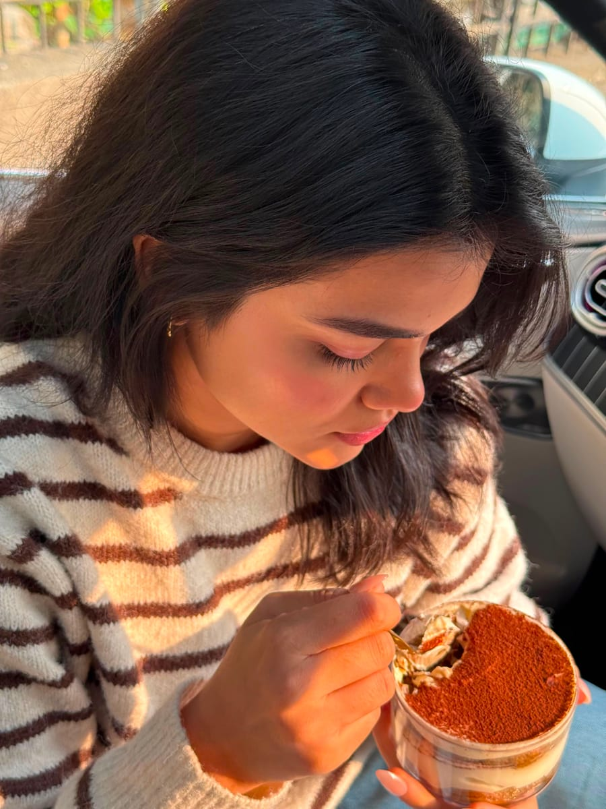

It started the way all the best things do: in a home kitchen, surrounded by people who love good food. For years, I spent my free time perfecting a single recipe—a completely non-alcoholic tiramisu that didn't compromise on that rich, classic, melt-in-your-mouth flavor. After countless batches and every family member and friend constantly telling me, "You really need to start selling this," I finally decided to take the leap.
What began as a passion project for my loved ones has now grown into Casa Misu. Today, our Goregaon kitchen churns out everything from our signature cloud-like Tiramisu tubs to our gooey cookies.
We believe that the best desserts are crafted in small batches, with zero shortcuts and a whole lot of love.

Welcome to Casa Misu. We are so glad you are here. ☁️🤎
— Damini Singh, Founder